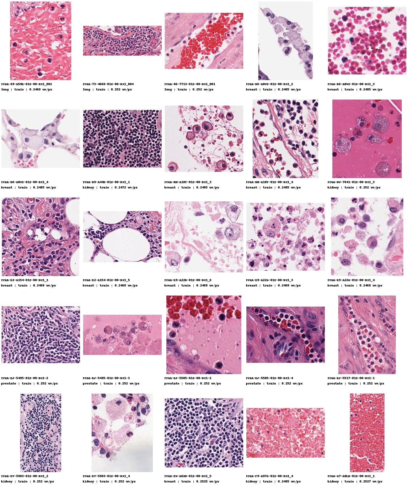
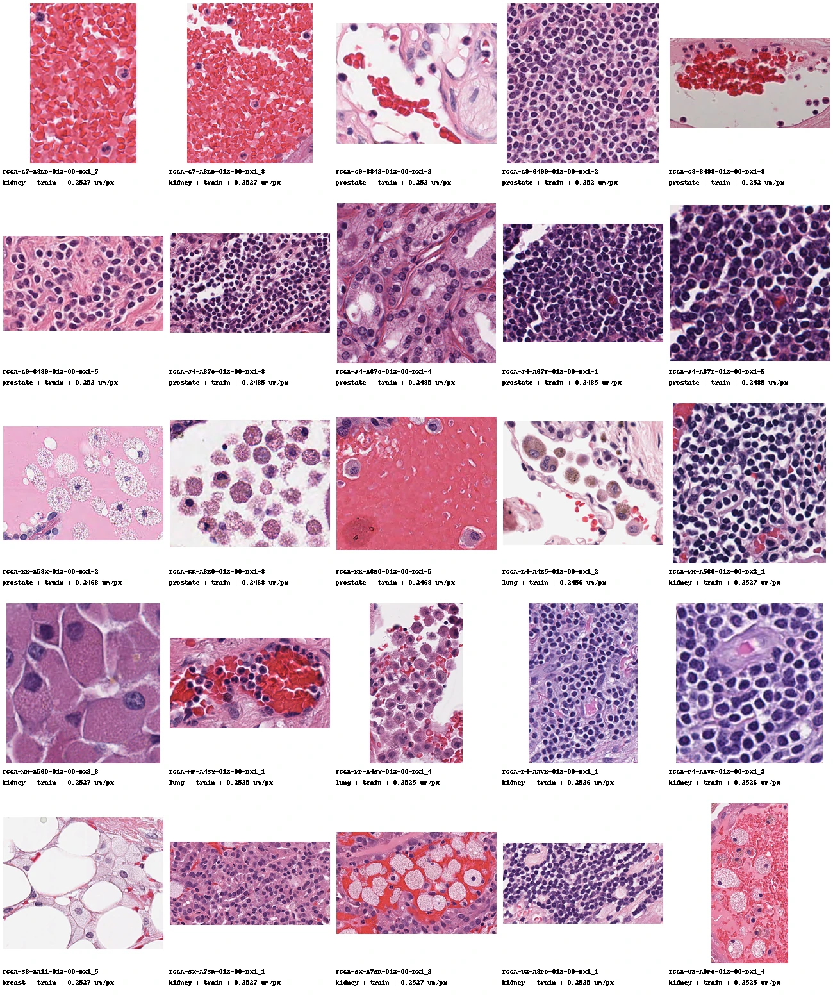
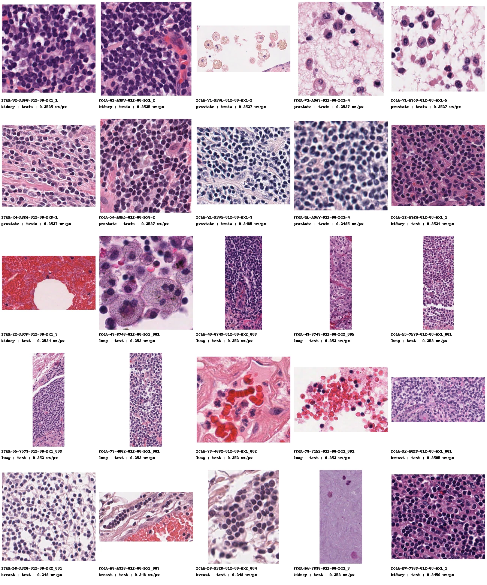
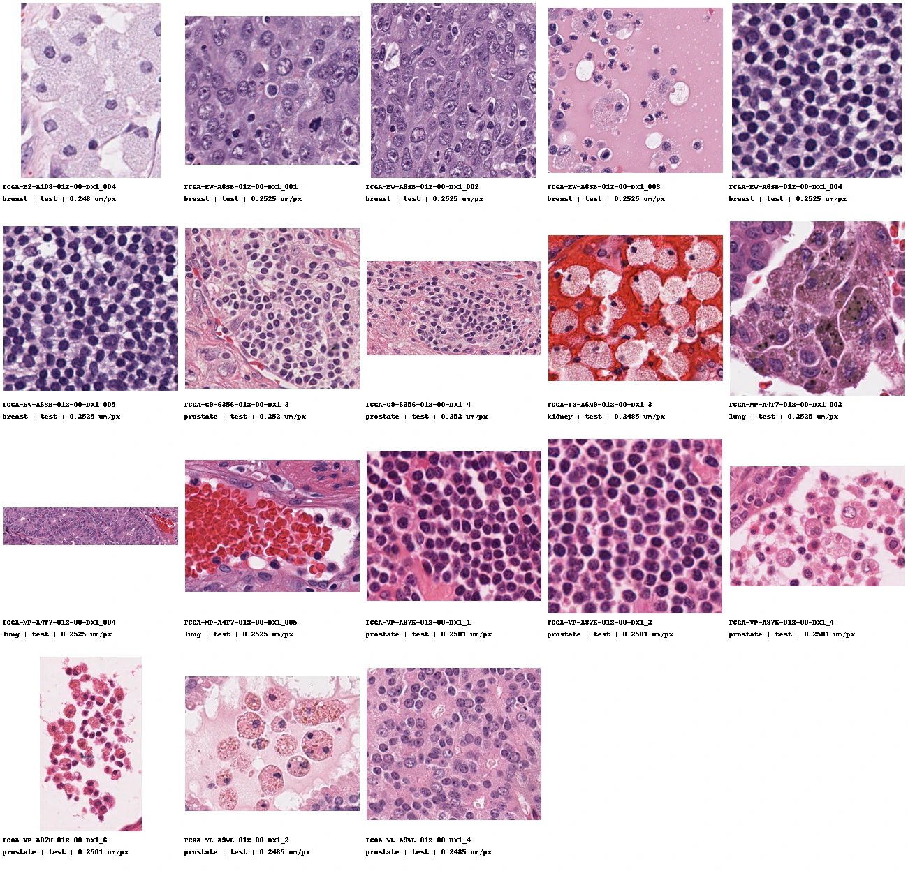

Input preflight only. These are scanner RGB H&E images, not virtual markers, cell predictions or QC-passing results. The current benchmark score excludes all 93 images. Each was visually inspected here at contact-sheet resolution: nuclei appear purple, eosin-rich tissue pink and erythrocytes red, with no obvious red/blue inversion. Cellularity varies; 16 prepared ROIs have fewer than ten expert annotations. GigaTIME DAPI alignment, shadows and marker fidelity remain to be checked after inference.
Every image carries its source tissue, train/test split and pixel spacing. Read the 93-image manifest, source-annotation class audit and polygon geometry audit. Large macrophage polygons are flagged for review; they are not automatically valid single-cell nuclei.
Images 1–25

Images 26–50

Images 51–75

Images 76–93
